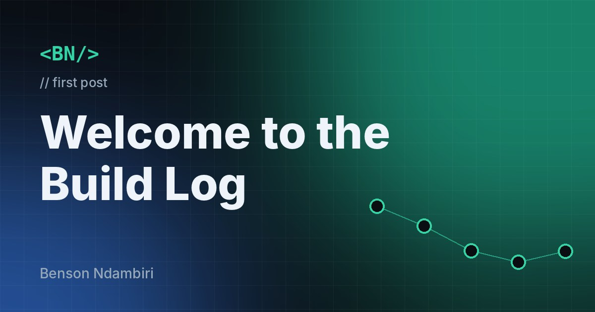

Welcome to the Build Log
Notes on DevOps, cloud and cybersecurity: what I build, break and fix, and why I decided to write it all down.

Welcome to the Build Log, a place where I write about the things I build, break and fix across DevOps, cloud and cybersecurity.
What to expect
Practical write-ups, lessons from real projects, and the occasional strong opinion backed by a pipeline that actually ran. You'll also find notes to future me and a few colourful highlights.
- CI/CD and automation patterns that survive production
- Cloud and infrastructure notes from the field
- Security lessons, from threat modelling to incident write-ups
Ship small, observe everything, and automate the thing you just did twice.
A tiny example
Every post here starts the same way:
git add . && git commit -m "feat: hello, build log" git push origin main
This is a sample post so you can see how things look. Open the editor, write something real, and delete this one from the Posts panel whenever you like.